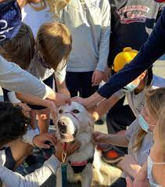

Dogs can be seen all over the place in todays society. They're even in video games!
Here are some examples of dog popularity.
By Uknown on Golden Opportunities fandom
By Pixabay.com on PICRYL (Nintendo owns right to characters in this picture)

By Hil0h on Tower Heroes (Hil0h owns right to this photo)
This is because dogs are commonly seen as "Mans best friend" and it's no different in games with most times a dog is your allie.